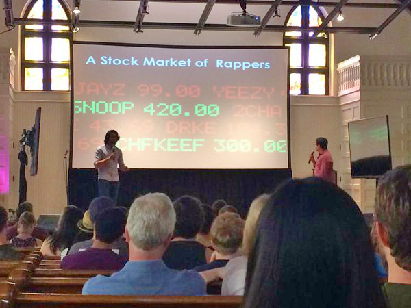

RapStock.io is where hip hop meets the stock market. Think of it as a game similar to fantasy football but for rappers. Players invest virtual points in hip hop artists they think will become popular. They compete for bragging rights by investing in artists who they think will become popular eventually. The 'stock price' for each rapper was determined by combining artist popularity metrics from Spotify hourly.

The website was made with the Python Django framework, PostgresSQL database, d3.js for visualizations, and hosted on Heroku. At our peak, we had over 2,000 registered monthly active users and received over 250,000 page views. We won 2nd place and $1,500 at the Effectual De-Risking Competition held at Darden business school. We also had an opportunity to pitch to Reddit Co-Founder and Y Combinator partner Alexis Ohanian who said:"great to users stick around" after we told him the average user session on our site was 6 minutes and 30 seconds long according to Google Analytics

RapStock.io Around The Web:
Video Interview By HackCville Media
Press Release from Placing 2nd at the Darden De-Risking Competition